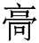

乙卯年国学丛刊十二册 六·○○ 正月五日
唐杜山感兄弟造象拓本一枚 蒋抑之赠
魏安丰王妃冯氏墓志一枚 一·○○ 正月九日
隋讳珉墓志一枚 ○·五○
丰乐七帝二寺邑义造象二枚 张春霆赠 正月十一日
高归彦造象一枚 同上
七帝寺主惠郁等造象一枚 同上
杂造象四种十枚 二·○○ 正月十四日
美原神泉诗并阴二枚 一·五○
□朝侯之小子残碑一枚 二·○○ 正月十九日
唐该墓志并盖二枚 一·○○
滕王长子厉墓志一枚 ○·五○
郑文公上碑一枚 二·○○ 正月二十一日
巩宾墓志一枚 一·○○
龙山公墓志一枚 一·○○
豆卢通等造象记一枚 ○·五○
籀

述林四册 一·六○ 正月廿八日殷商贞卜文字考一册 ○·四○
历代画象传四册 二·○○二三·○○○
中国名画第十九集一册 一·五○ 二月四日
李业阙一枚 王叔钧赠 二月五日
高颐阙大小五十三枚 同上
贾公阙一枚 同上
张贵男墓志一枚 一○·○○ 二月十二日
张寿残碑一枚 ○·五○ 二月十八日
平邑皇圣乡阙题字二枚 ○·五○
杂汉画象五枚 一·○○
高柳村比丘惠辅等造象一枚 一·○○
曹望憘造象四枚 一二·○○
朱岱林墓志一枚 五·○○ 三一·五○○
衡方碑并阴二枚 二·○○ 三月四日
谷朗碑一枚 一·○○
灵崇二大字 ○·五○
王谟题名并诗刻一枚 ○·五○
庾公德政颂一枚 一·○○
江阳王次妃石氏墓志一枚 六·○○ 三月十一日
孙龙伯造象一枚 添入
龙门全拓大小乙千三百二十枚 三三·○○ 三月十八日
河朔石刻卅种四十八枚 二○·○○ 三月二十日
刘懿墓志一枚 五·○○ 三月廿一日
汉画象一枚 ○·五○ 三月廿五日
杂专拓片〔二〕十一枚 一·五○七一·○○○
泰山秦篆残石一枚 ○·五○ 四月一日
李氏象碑颂一枚 ○·五○
成公夫人墓志一枚 一·○○
房周陀墓志一枚 一·五○ 四月六日
燕孝礼墓志一枚 一·○○
刁遵墓志并阴二枚 三·○○ 四月七日
白石神君碑并阴二枚 六·○○ 四月十一日
阎立本帝王图一册 一·二○ 四月十五日
强独乐造象一枚 陈师曾赠 四月十六日
神州大观第十一集一册 一·六五 四月廿二日
赞三宝福业碑并额二枚 一·○○ 四月廿八日
熹平元年黄肠石题字一枚 ○·五○ 四月廿九日
字皇女残石一枚 二·○○
高建墓志一枚 一·○○
高建妻王氏墓志一枚 一·○○
高百年墓志一枚 一·○○
高百年妻斛律氏墓志一枚 一·○○二三·八五○
隶释隶续八册 一二·○○ 五月六日
元显魏墓志一枚 三·○○
六朝造象十一种廿八枚 七·○○
鱼山书院汉画象一枚 杨莘士寄 五月十六日
孙辽浮图铭一枚 二·○○ 五月十八日
吴严墓志并盖二枚 三·○○
李则墓志并盖二枚 三·○○
齐太公吕望表一枚 三·○○ 五月十九日
张安姬墓志一枚 一·○○
六朝造象四种十三枚 六·○○
天统残碑一枚 ○·八○ 五月二十七日
隋王君墓志盖一枚 ○·二○
景宋薛氏钟鼎款识四册 三·○○
汉画象十枚 杨莘士寄 五月卅一日
翻本于纂墓志一枚 同上
杂造象四种五枚 同上
杂专文三枚 同上四四·○○○
侯夫人墓志一枚 一·○○ 六月十七日
王克宽墓志一枚 ○·五○
讳直墓志一枚 ○·五○
意瑗法义造佛国碑四枚 一·五○
潘景晖等造象三枚 一·○○
杂造象六枚 二·○○
涵芬楼秘笈第二集八册 二·五○九·○○○
刘平周造象四枚 二·○○ 七月一日
杂造象二枚 添入
江苏梁碑十五枚 五·○○ 七月二日 九月以抵表工估六元
禅国山碑一枚 二·○○
萧宏碑画象一枚 一·○○
墓阙残字九枚 一·○○一一·○○○
家之基迈残石一枚 ○·五○ 八月五日
唐刻佛象拓本一枚 一·五○
王基断碑一枚 ○·五○ 八月十八日二·五○○
安阳宝山石刻拓本六十二种八十二枚 范云台赠 九月九日
曹真残碑并阴二枚 一·○○ 九月二十一日
方法师等造石窟记并经二枚 二·○○三·○○○
藤阴杂记二部四册 宋洁纯赠 十月四日
龙凤专拓本一枚 陈仲书先生赠 十月五日
卢太妃墓志一枚 二·五○
临淮王墓志一枚 二·五○
郭达墓志并盖二枚 ○·八○
元倪妻买造象铭一枚 ○·二○
高建墓志盖等四枚 一·○○ 十月十日
陶贵墓志一枚 二·○○
安乐王元诠墓志一枚 一二·○○ 十月十四日
关中侯苏君神道一枚 一·○○
元钦墓志一枚 许诗荃赠 十月十八日
荀岳墓志一枚 二·五○ 十月二十日
包义五百余人造象并阴二枚 五·○○
寇凭墓志一枚 二·五○
寇演墓志一枚 二·五○
寇臻墓志一枚 二·五○
冯恭墓志一枚 二·○○ 十月廿八日
杨范墓志一枚 二·○○
姚纂墓志一枚 一·○○四二·○○○
张敬造石柱佛象六枚 五·○○ 十一月四日
姚氏臧杂造象十种十三枚 六·○○
贺长植墓志一枚 二·○○
汉画象残石二枚 一·○○ 十一月十日
寇治墓志一枚 三·○○
北魏杂造象六枚 二·○○ 十一月十八日
张法师碑一枚 一·○○
萧瑒墓志并盖二枚 二·五○
宋买造象四枚 一·○○
耿氏墓志一枚 一·五○ 十一月二十五日
张阿素墓志一枚 一·五○
魏宣武嫔司马墓志一枚 四·○○三○·五○○
食斋祠园画象一枚 一·○○ 十二月八日
宫内司杨氏墓志一枚 一·○○
元彦墓志一枚 二·○○
尹景穆造象并阴二枚 一·五○
造佛经残石二枚 ○·五○
三公山神碑阴一枚 一·○○ 十二月十六日
石门铭后题记一枚 一·○○
范思彦墓铭一枚 一·○○
临淮王象碑一枚 三·○○
孔庙杂汉碑六种七枚 三·五○ 十二月二十五［三］日
校官碑释文一枚 ○·五○
赵法现等造象二枚 一·○○
魏墓志六种六枚 一五·○○
东安王太妃陆 文献王元湛 文献王妃冯
文献王妃王 元均 元显
魏齐墓志五种五枚 一○·○○
窦泰 窦泰妻娄 元悰
元宝建 石信
古明器图录一册 一○·○○ 十二月三十日
齐鲁封泥集存一册 六·○○
历代符牌后录一册 三·○○六一·○○○
总计三六二·四五○ 十二月卅一日灯下记之。
[2] 访蔡先生 系请蔡元培介绍周作人往北京大学任教。后周作人于本年4月到京，任北京大学国学研究所教授。
[3] 京师图书馆开馆式 京师图书馆从广化寺迁至方家胡同国子监南学，本日举行开馆式，并合影留念。次日开放阅览。
[4] 这次茶话会在教育部礼堂举行，会上陈列六朝以来名人书画一百五十余种，并演奏古乐。
[5] 指午门将作图书馆事。本年1月，教育部获准在故宫午门设置京师图书馆，在端门楼设置历史博物馆。故鲁迅等前往察看。后京师图书馆未迁午门，仅在该处设一小型图书馆；历史博物馆则于1918年始迁至午门前左右朝房。
[6] 鲁迅向蔡元培介绍周作人到北京大学任职，获蔡同意，故寄旅费。
[8] 瘄子 麻疹。周作人自5月8日发病，12日至北京首善医院，被误诊为感冒，后病情加重。因当时猩红热流行，鲁迅于次日延请格林博士诊，确诊为麻疹。
[9] 鱼山书院 即渔山书院，在山东济宁。清道光十年（1830）济宁直隶州知州王镇创立。1905年改为第一高等小学堂。
[10] 济南金石保存所 即山东金石保存所。参看本卷第215页注〔3〕。
[11] 东京堂 日本东京的一家书店。1890年3月10日由高桥新一郎创立，1892年6月改为文武堂，1917年成为株式会社东京堂书店。
[12] 石川文荣堂 日本东京的一家书店。1916年相模屋书店主人去世后，善后事务由石川文荣堂处理。
[13] 指张勋复辟后鲁迅脱离教育部。本年7月1日，张勋拥戴清废帝溥仪“登极”，鲁迅愤而去职，为此赴部与同人告别。
[14] 指张勋复辟后鲁迅避难东城。段祺瑞以拥护共和之名于7月3日在马厂誓师，讨伐张勋，所部逼近京郊。本日上午十时，南苑航空学校航空队向皇宫投弹三枚。6日起，城内居民纷纷避难，鲁迅等在齐寿山帮助下移寓新华旅馆。
[15] 指段祺瑞、张勋间的战事平息。本日清晨段祺瑞部向张军发动总攻，占领天坛等处，下午一时许攻破张宅，张勋逃进荷兰使馆，战事遂告结束。
[16] 义兴局 齐寿山家开设在东裱褙胡同的粮店，当时因无处购买食品，故鲁迅等往齐处用餐。
[17] 拟大学徽章 鲁迅受蔡元培之托为北京大学设计校徽，徽圆形，为阳文美术体“北大”二字，于本日设计毕寄蔡。后即为该校所采用。
[18] 公园内图书阅览所 该所以中央公园社稷坛之戟殿为阅览室及书库，本日开始接待读者。1925年更名为京师第三普通图书馆。
[19] 书券 日本丸善书店于明治三十一年（1898）开始发行书券，顾客可凭书券换取等值的书籍及文具。
[20] 顺直水灾 本年因南运河失修决口，河北发生大水灾，灾区波及一百余县，难民数百万。鲁迅曾先后于9月27日、10月26日、12月26日三次捐款。顺，即顺天府（辖今北京及周边地区）；直，即直隶省（今河北）。
[23] 听唱国歌。教育部拟废洪宪国歌，恢复《卿云歌》为国歌，为此教高等师范学校学生演唱，由教育部有关人员和教育界代表同往审听。
[24] 券 指中交券，又称中交票。参看本卷第250页注〔1〕。
[25] 中西屋 日本东京的一家西文书店，1881年丸善书店经理早矢仕有开设于东京神田，1934年并入丸善书店。鲁迅留日时常去该店浏览，回国后仍有联系。
[27] 纪念日休假 1915年12月25日，蔡锷等联名通电反对袁世凯恢复帝制，宣布云南独立，由此爆发护国战争。袁世凯死后，国会于1916年12月21日公布的民国纪念日中，增加每年12月25日为云南首义纪念日。